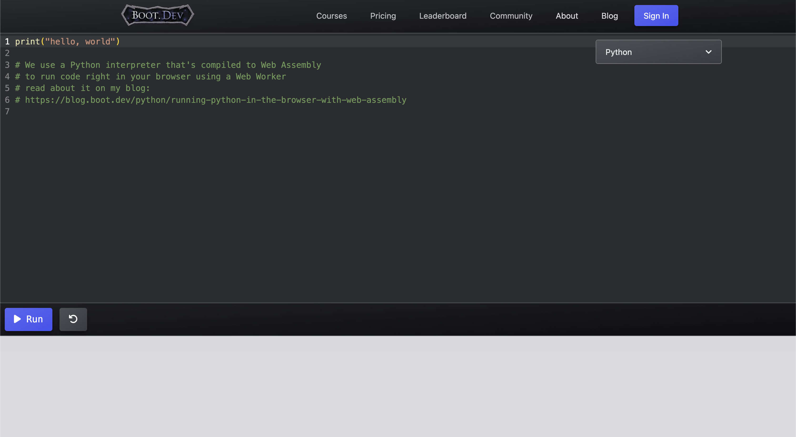

Chapter1 : イントロダクション
0. はじめに
ソフトウェア研究部の林です。
突然ですが、みなさん、プログラミングに興味はありますか？
もし興味がある方は、興味を持ったきっかけは何でしたか？
ゲームやアプリを自分で作ってみたいと思ったことでしょうか。
プログラミングで有名な人の話を聞いたことでしょうか。
学校の授業で触れる機会があったから、という人もいると思います。
私は、私のゲーム好きの性格、家族、学校など、さまざまな要因が絡み合って興味を持ちました。
しかし、プログラミングの習得は一筋縄ではいかないもので、いろいろな苦労をしました。
まず、英語が読めない。そして、専門書通りに書いても動かない。などなどです。
ですが、はじめの一歩を踏み出した後は、できることがどんどん増えていきました。
そこで、プログラミングに興味を持っている方に、はじめの第一歩を踏み出してもらい、
プログラミングの面白さを感じてもらいたい、という思いでこのサイトを作りました。
このサイトを見て、少しでもプログラミングをやってみたいと思っていただけたら幸いです。
(また、私と一緒にプログラミングをしてくれる方、募集中です...(こっちがメイン))
解説にPythonを採用したのは、Pythonが最初に学ぶ言語として良いと言われていることと、
情報Iの範囲で習うようなので、せっかくだから作りたいな、と思ったからです。
私自身、Python以外でも、JSやらC#やら色々な言語を触っていますし、
初めて覚えたのも、PythonではなくHTML,CSS,JavaScriptだったので、
どう覚えていくのが最適かは私も良くわかりませんが、
なるべく誰にでもわかっていただけるよう、プログラミング愛を注いで、
1つ1つ丁寧に書いたつもりです。そのぶん、文章が長くなっていますので、
サラッと読んでもらって、理解できなかったらじっくり読んでもらう、
という方法が良いかと思います。
※私の主観やら考えが多く含まれていますので、内容は間違っているかもしれません。
1. Pythonとは？
このサイトを見てくださっている皆さんは、おそらく
Pythonがプログラミング言語の一つであるということはご存知でしょう。
Pythonは、オランダ人のグイド・ヴァンロッサム氏が1991年にリリースしたプログラミング言語です。
プログラミング言語には他にも、CやC++、Java、Ruby、JavaScriptなど、たくさん種類があります。
このようにたくさんの言語がこの時代に共存しているのは、
言語の固有の特徴や開発者の好みで、使う言語が選ばれているからです。
(ちなみに私はPythonが大好きです)
Pythonは、その使いやすさから、今でも世界中で広く利用されています。
Pythonは、Web開発やデータ分析、AIなど、さまざまな分野に使える汎用性の高い言語で、
今話題のChatGPTもPythonを用いて開発されています。
2. Pythonの開発環境を作ろう！
Pythonのインストールは環境によって異なるため、ここでは解説しません。
Pythonのプログラミングには、いくつかの方法があります。
IDLEを利用する方法
まず、Pythonに付属してくるIDLEを利用する方法です。
画像はWindowsのものです
こちらは、>>>のラインにPythonのプログラムを入力することで、
一行ずつ(例外もありますが)実行してプログラミングをするソフトウェアです。
このソフト自体が、Pythonを利用して作られています。
Windows標準の「コマンドプロンプト」というソフトと
ほぼ同じようにしてプログラミングをします。
使いにくく、メリットがないので、このサイトでは一切使用しません。
VSCodeなどのコードエディタを利用する方法
次に、VSCodeなどのコードエディタを利用する方法です。
画像はMacのVSCodeで、拡張機能を入れてあります。Windowsのものと若干違います。
画像はMacのVSCode(Web版)ですが、Windowsのものと差異はないと思います
こちらは、エンジニアが使ったりしているコードエディタです。
このVSCodeというエディタは、正式名称VisualStudioCodeといいます。
他にも色々なエディタがありますが、VSCodeが私のイチオシです。
Web版がありますので、ダウンロードをしなくてもある程度使えます。
ダウンロードすればすべての機能を無料で使用できます。
コードエディタは、プログラムを書いて、Pythonファイルを保存し、
そのファイルを実行する、という方法でプログラミングしていきます。
特徴は、どんな言語でもプログラミングできることです。
このサイトでは、実践編のパートで使用します。
Jupyterなどを利用する方法
次に、Jupyterなどを利用する方法です。
画像はMacのものですが、Windowsのものと差異はないと思います
こちらは、プログラムの入力欄(セルと呼びます)にプログラムを書き、
実行することで、そのセルに書かれたプログラム全体を実行します。
セルをつなげて1つのPythonファイルとして保存することも、
セルの状態を専用のファイルで保存することもできます。
個人的には、コードエディタとIDLEを合わせたような感じだと思っています。
こちらは、プログラムをサクッと実行できるので研究などで使います。
便利ですが、このサイトでは使用しません。
Boot.devなどを利用する方法
最後に、boot.devなどのオンラインPython実行サイトを利用する方法です。

画像はMacのものですが、Windowsのものと差異はないと思います
こちらは、プログラムの入力欄にプログラムを書き、
実行ボタンを押すことで、プログラムの実行結果がわかるという物です。
アプリなど、実際に使う物を作る時には使用できませんが、
コードのテストや練習などに使うことができます。
操作感はコードエディタと同じような物ですので、使いやすいです。
このサイトの基本編ではBoot.devを使用します。
3. このサイトの読み方
このサイトには、コードをたくさん載せてあります。
書けば実際に動くコードを載せているので、ぜひ書いて実行してみてください。
コードは、コピーすることはできますが、なるべく自分の手で書くことをおすすめします。
最初のうちは、「コードを書くことに慣れる」「自分の手で書いた達成感を味わう」
ということを目的に、なるべく自分の手で書いた方がいいと個人的には思います。
ぜひ、自分の手で書いたコードを動かして、楽しさを実感してください！
また、書いたコードを改造するのも楽しいですよ！
個人的には、自分オリジナルのコードを書けるようになるまでは、
解説サイトなどのコードを真似して書き、その中の数値などを変えて
「ここをこうするとこうなるんだ〜」と、実験みたいな感じで色々試すといいです。
<ご注意>
1. サイト中で、 〇〇を〇〇することを、「〇〇〇〇」といいます
のように説明しているところがありますが、それは一切覚える必要はありません。ただ、
私がいつも使用している言葉なので、わかってもらえるように書いています。
2. 参考文献など特になく、完全オリジナルですので、わかりにくい可能性が高いです。
このサイトは、学校ではなく、家で、私のMacを使って作っています。
Windowsとは挙動や画面が若干異なる場面があります。
そこはそれぞれのやり方を適宜お伝えします。
ここまで読んでいただきありがとうございます。
ぜひ、左のサイドバーの数字ボタン、または下の「次のページへ」ボタンから、
どんどん読み進めてください！！
 1
2
3
4
5
6
1
1
2
3
4
5
6
1